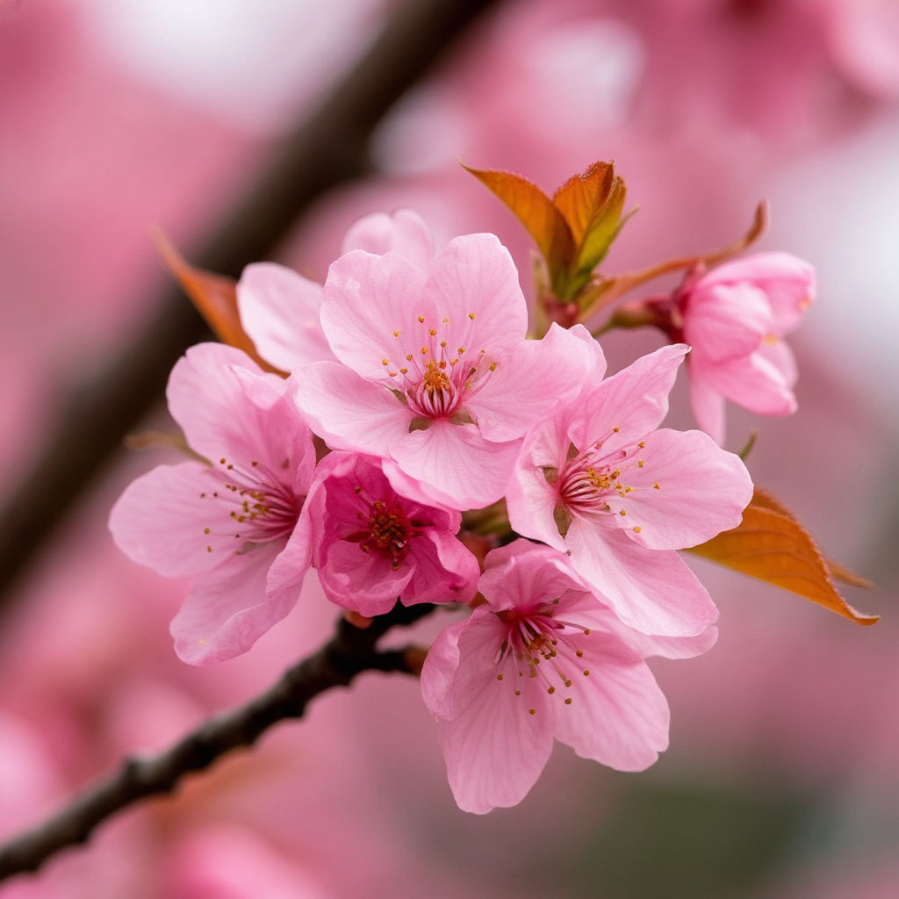

Япония имеет одну из самых древних культур в мире, с историей, насчитывающей более 2,000 лет. Первые записи о Японии относятся к III веку нашей эры, когда она была известна как "Ямато"
Острова
Япония состоит из 6,852 островов, из которых четыре крупнейших — Хонсю, Хоккайдо, Кюсю и Сикоку — составляют около 97% территории страны
Культура чая
Японская чайная церемония (чадо) — это искусство, которое отражает философию, эстетику и уважение к природе

Технологии
Япония известна своими передовыми технологиями, включая роботов, высокоскоростные поезда (синкансены) и инновационные гаджеты.
Сакура
Цветение сакуры (вишни) весной — важное событие в Японии, которое отмечается пикниками под цветущими деревьями.
Уникальная кухня
Японская кухня, включая суши, рамен и темпуру, признана объектом культурного наследия ЮНЕСКО. Она известна своим акцентом на свежесть и сезонность продуктов
Традиционная одежда
Кимоно — это традиционная японская одежда, которая часто носится на праздниках и особых событиях. Каждый стиль кимоно имеет своё значение и символику
Этикет и вежливость
В Японии высоко ценится вежливость и уважение. Приветствия, такие как поклон, играют важную роль в общении
Космические достижения
Япония — одна из стран, активно участвующих в космических исследованиях. Японская космическая программа JAXA разрабатывает спутники и проводит миссии на Луну и Марс
Фестивали
Япония славится своими красочными фестивалями (мацури), которые проходят в каждом регионе и включают традиционные танцы, музыку и парады